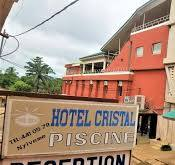
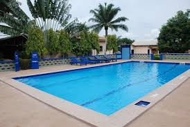
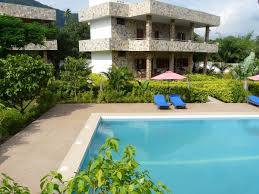

Nos Hôtels Recommandés

Hôtel Cristal
Un hôtel de luxe avec des chambres élégantes et un restaurant gastronomique.

Hôtel Geyser
Un hôtel confortable offrant un bon rapport qualité-prix et des services amicaux.

Auberge Papillon
Une auberge charmante avec un accueil chaleureux et un cadre agréable.

Jardin de l'Éléphant
Un éco-lodge offrant une immersion totale dans la nature avec des bungalows confortables.
Localisation des Hôtels
Voici quelques hôtels à Kpalimé et leur emplacement :
- Hôtel Cristal - Voir sur Google Maps
- Hôtel Geyser - Voir sur Google Maps
- Auberge Papillon - Voir sur Google Maps
- Jardin de l'Éléphant - Voir sur Google Maps